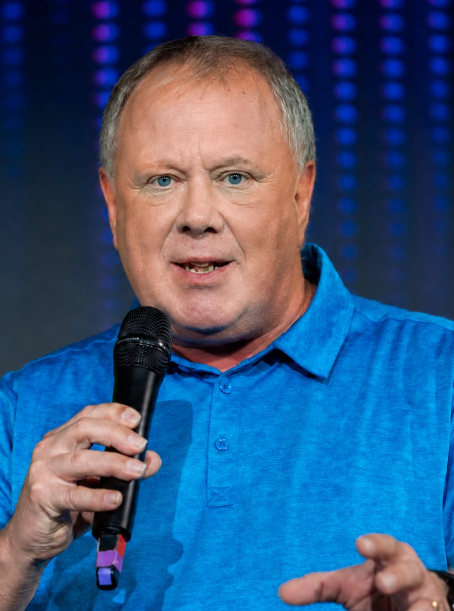
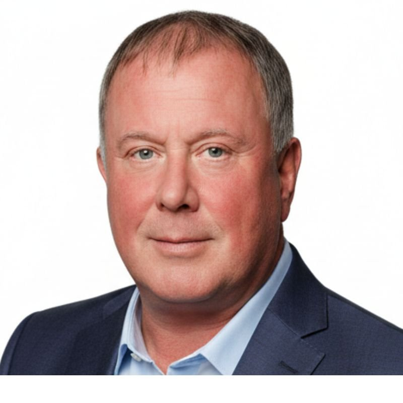
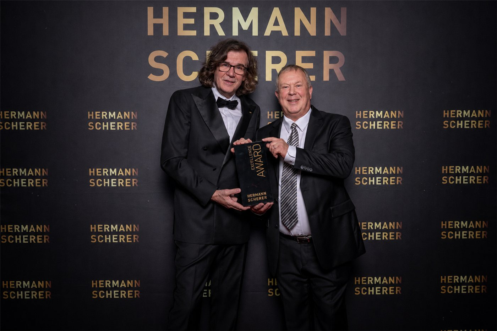

Founder Summit 2026
Inspiration Stage
April 2026 · vor großem Publikum
Keynote Speaker · KI & Mensch · seit 1988 im Wandel
Gerade jetzt rollt eine Welle über Millionen Menschen. Sie heißt Künstliche Intelligenz — und viele in Ihrem Publikum fragen sich still: „Werde ich überhaupt noch gebraucht?" Meine Keynote gibt ihnen die Richtung zurück und macht aus Abwehr Aufbruch: Die KI ist das Werkzeug — der Mensch bleibt das Original.
Sieben Technologiewellen seit 1988 — die Ruhe daraus bringe ich auf Ihre Bühne, für die Entscheidungen, die jetzt anstehen.


Die leise Frage
Bin ich bald überflüssig?
Das Gefühl im Meeting, wenn alle nicken — und einer denkt: Ich komme nicht mehr mit.
Der Moment, in dem jemand ein KI-Tool öffnet — und es sofort wieder schließt.
Bleibt diese Frage unbeantwortet, liegt es am Ende nicht an der Technik. Es liegt an Menschen, die innerlich zugemacht haben — leise, lange bevor es jemand bemerkt.
Das ist keine Schwäche, sondern die ehrlichste Reaktion auf einen echten Umbruch. Nur: Ausgesprochen wird sie selten — und ungelöst wird sie teuer.
Der Wendepunkt
Aus „Bin ich gut genug?"
wird „Was kann ich noch werden?"
Aus „Ich kann das nicht"
wird „Ich kann das noch nicht."
Die Technik war nie das Problem. Die Technik funktioniert. Was nicht funktioniert, ist die Brücke zwischen der Maschine — und dem Menschen davor. Genau diese Brücke baue ich. Von der Bühne aus. In den Minuten, die Ihr Anlass hergibt — und die danach weiterwirken.
Das Angebot
Ich verkaufe keine Vorträge aus dem Katalog. Bevor ich auf Ihre Bühne gehe, will ich verstehen, was die Menschen in Ihrem Publikum wirklich umtreibt — und baue daraus einen Vortrag, den nur Ihr Anlass bekommt.
Zuerst höre ich zu — im Mindshift-Briefing: Ihr Anlass, Ihre Branche, die stille Frage, die im Raum steht. Dann baue ich eine Keynote, die sich anfühlt, als wäre sie nur für diesen einen Saal geschrieben — weil sie das ist.
Öffentliche Bühnen
Kein Studio, kein Rollenspiel: echtes Publikum, kurzer Slot, volle Wirkung. Auf diesen Bühnen zeigt sich in Minuten, ob eine Botschaft trägt.
Inspiration Stage
April 2026 · vor großem Publikum

Live vor Publikum
Juni 2026 · Live-Bühne

Große Bühne, kurzer Slot, volle Wirkung
Juli 2026 · Internationale Bühne

Wer spricht
Ich erinnere mich an den Abend, an dem ich einer Maschine zum ersten Mal eine Aufgabe gab, für die ich früher einen halben Tag gebraucht hätte. Sie war in zwanzig Sekunden fertig — besser, als ich gehofft hatte. Ich saß davor und wusste nicht, ob ich beeindruckt sein sollte oder erschrocken. Ich war beides. Mit vierundsechzig. Da wusste ich: Diese Frage — werde ich noch gebraucht? — trifft jeden. Auch mich.
Deshalb stehe ich mit den Menschen im selben Wasser, nicht am sicheren Ufer. Und ich spreche nicht als KI-Opportunist: Ich habe seit 1988 jede Welle miterlebt — Dipl.-Ing. für Datentechnik, zertifizierter IBM-Engineer, 37 Jahre digitale Transformation, von den ersten LAN-Netzen im Frankfurter Bankenumfeld bis zu generativer KI.
Meine andere Hälfte ist der Mensch: fundierte Arbeit mit Verhaltenspsychologie und Stärkenprofilen. Diese seltene Symbiose aus Ingenieurslogik und Menschverständnis ist der Grund, warum es auf Ihrer Bühne nicht um Tools geht — sondern um die Menschen davor. Ich bringe die Ruhe, wenn andere hyperventilieren. Erst hinschauen. Dann handeln.
Auf einen Blick
Formate, Dauer, Themen — kompakt zum Weitergeben.
Speaker-One-Pager, Pressefotos und Vita erhalten Sie auf Anfrage. Kurz anfragen →
Häufige Fragen
Über Künstliche Intelligenz und den Menschen: wie Menschen den KI-Wandel tragen, statt ihn zu fürchten. Die Kernbotschaft: Wir feiern die Technik – und verlieren die Menschen. Die KI ist das Werkzeug, der Mensch bleibt das Original.
Für Firmen-Events, Verbandstagungen, Kongresse und öffentliche Veranstaltungen — überall, wo Menschen durch Veränderung und den KI-Wandel begleitet werden.
Keynote oder Impulsvortrag, 20 bis 60 Minuten, auf Ihren Slot zugeschnitten. Vortragssprache ist Deutsch.
Nein. Jede Keynote wird individuell entwickelt — zugeschnitten auf Ihre Branche, Ihren Anlass und Ihr Publikum.
Weil hier zwei Welten zusammenkommen, die sonst getrennt bleiben: die Technik-Logik von jemandem, der seit 1988 jede Digitalwelle mitgegangen ist (Dipl.-Ing. Datentechnik, IBM-zertifiziert) — und ein echtes Verständnis dafür, was Veränderung mit Menschen macht. Deshalb geht es auf Ihrer Bühne nicht um Tools, sondern um die Menschen davor.
Über das Anfrageformular auf dieser Seite. Dirk meldet sich persönlich mit einem unverbindlichen Gespräch über Ihren Anlass.
So einfach ist es
Kurze Anfrage über das Formular. Ich melde mich persönlich bei Ihnen.
In einem persönlichen Gespräch — dem Mindshift-Briefing — klären wir Publikum, Ziel und Ton. Daraus entsteht eine Keynote, die nur Ihr Anlass bekommt — nicht von der Stange.
Verlässlich, vorbereitet, präsent — mit einer Botschaft, die nach dem Applaus weiterwirkt.
Was bleibt

Bevor Sie entscheiden
Als Hermann Scherer — einer der bekanntesten Speaker-Macher Europas — mir den Excellence Award überreichte, ging es nicht um mich. Es ging um eine Botschaft, die im Raum ankommt.
Genau diese Wirkung bringe ich auf Ihre Veranstaltung — zugeschnitten auf Ihr Publikum.
Verfügbarkeit für Ihre Bühne anfragenDer nächste Schritt
Erzählen Sie mir kurz von Ihrer Veranstaltung. Ich melde mich persönlich — nicht mit einem Angebot von der Stange, sondern mit einem Gespräch darüber, was Ihr Publikum wirklich braucht.